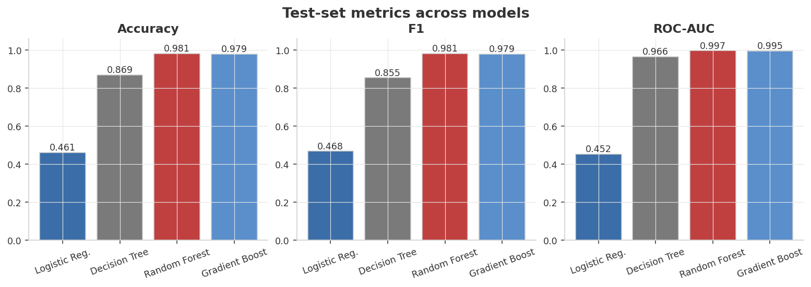
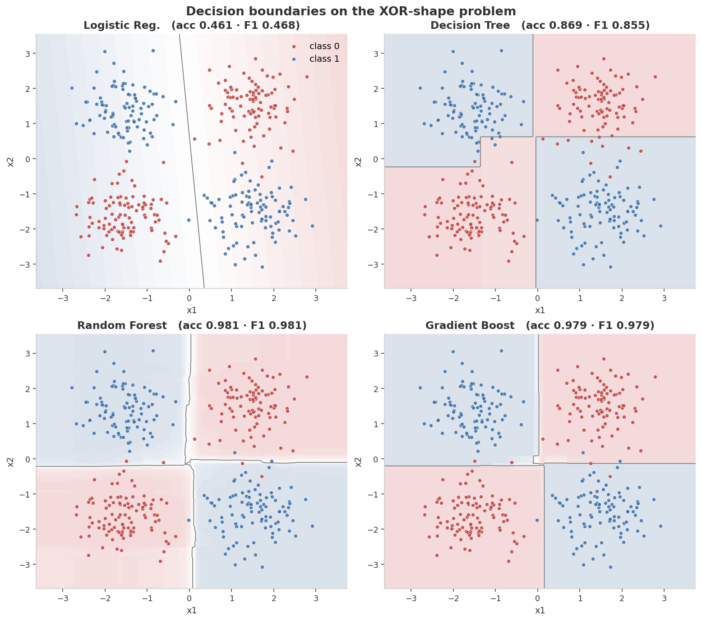
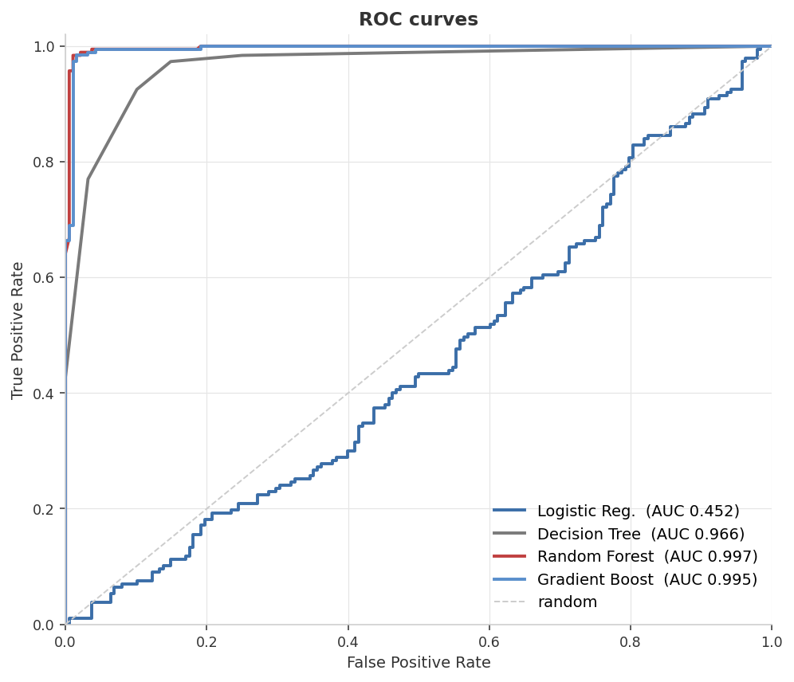
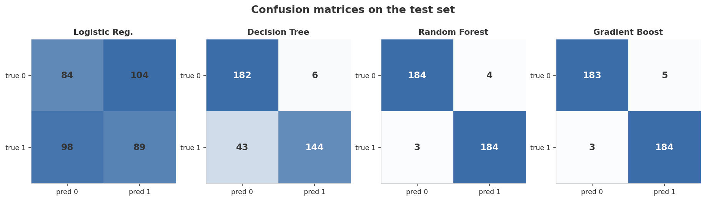
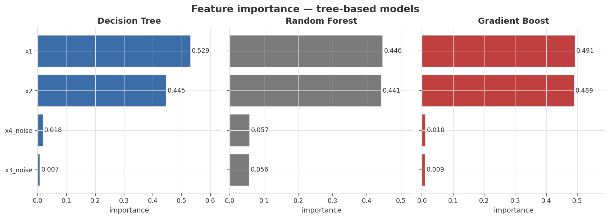

0.981
Best Accuracy
Random Forest (200 trees)
0.997
Best ROC-AUC
Random Forest (200 trees)
0.461
Logistic Accuracy
Below chance — XOR is unsolvable linearly
Model scorecard
| Model | Accuracy | F1 | ROC-AUC |
|---|---|---|---|
| Logistic Regression | 0.461 | 0.468 | 0.452 |
| Decision Tree depth 6 | 0.869 | 0.855 | 0.966 |
| Random Forest 200 trees | 0.981 | 0.981 | 0.997 |
| Gradient Boosting 200 stages | 0.979 | 0.979 | 0.995 |
● navy = best in column ● orange = notably worst (Logistic — below chance on XOR) ● gray = neutral · values from
results/metrics.jsonHeadline finding: Logistic regression is worse than chance — that's not bad luck, it's a mathematical guarantee. XOR is the canonical example of a problem no linear classifier can solve, and a synthetic dataset lets us demonstrate that cleanly. The ensembles' 98% accuracy is the gap a single decision tree leaves on the table.
Visual diagnostics
1 · Test-set metrics across models
The bar chart maps the model-complexity ladder almost perfectly: a linear model floors at ~50% (random), a single tree climbs to ~87%, and either ensemble of trees lands at ~98%.

2 · Decision boundaries — the visual proof
Logistic can only draw one straight line (and fails). The Decision Tree draws jagged axis-aligned rectangles. Random Forest and Gradient Boosting arrive at smooth, near-circular boundaries that almost perfectly separate the four XOR blobs.

3 · ROC curves on the test set
Logistic's ROC sits on the diagonal — its score function carries no information. Random Forest (AUC 0.997) and Gradient Boosting (0.995) nearly touch the top-left corner.

4 · Confusion matrices
Logistic's matrix is balanced-but-wrong. The other three drain the off-diagonals to nearly zero — the signature of a working classifier.

5 · Feature importance — the noise rejection check
Synthetic data ships with two pure-noise features (x3_noise, x4_noise). All three tree-based models assign them near-zero importance, confirming they learn to ignore irrelevant features.

Metric definitions
All metrics computed on the 375-row held-out test set
375 test rows the models never saw during fitting; class balance is 50/50 (stratified split), so random chance is ~0.50.
| Metric | Definition | How to read it for this problem |
|---|---|---|
| Accuracy | correct predictions / n | Fraction of test points classified correctly. With 50/50 balance, random chance is ~0.50. Logistic at 0.461 is below chance — mathematical impossibility, not noise. |
| F1 (binary) | 2·precision·recall / (precision+recall) | Harmonic mean of precision and recall. With balanced classes, F1 closely tracks accuracy; diverges when a model systematically over-predicts one class. |
| ROC-AUC | area under the ROC curve | Score of 0.5 means the model's probability score carries no information. Logistic at 0.452 confirms its scores are useless. AUC near 1.0 for ensembles means their predict_proba almost perfectly ranks class 1 above class 0. |
| Confusion matrix | TN/FP/FN/TP cell counts | Visualized as figure 4. A working classifier drains off-diagonals toward zero. Logistic shows near-uniform off-diagonals. |
Full results
| Model | Test Accuracy | Test F1 | Test ROC-AUC |
|---|---|---|---|
| Logistic Reg. | 0.4613 | 0.4684 | 0.4524 |
| Decision Tree (depth 6) | 0.8693 | 0.8546 | 0.9661 |
| Random Forest (200 trees) | 0.9813 | 0.9813 | 0.9968 |
| Gradient Boost (200 stages) | 0.9787 | 0.9787 | 0.9952 |
Determinism: a single
seed = 42 drives blob sampling, noise draw, shuffling, and the train/test split. All four model constructors also receive random_state=42. The qualitative ranking (Logistic fails → single tree ~87% → ensembles ~98%) is robust across seeds; third-decimal values are seed-dependent.Run it yourself
# 1. environment python3 -m venv .venv && source .venv/bin/activate pip install -r requirements.txt # 2. generate the synthetic XOR-shape dataset (deterministic) python generate_data.py # 3. fit, evaluate, render dashboard figures python train.py
Produces the five PNGs in
assets/ and the metric summary in results/metrics.json.Tweak the difficulty
DataConfig(
n_samples=1500,
cluster_std=0.55, # blob spread — higher = more class overlap
n_noise_features=2, # how many distractor features to add
seed=42,
)
Try
cluster_std=0.9 to see all models degrade gracefully, or n_noise_features=10 to watch the single decision tree start to choke even at depth 6.